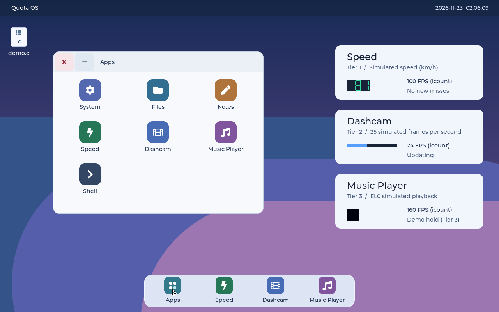
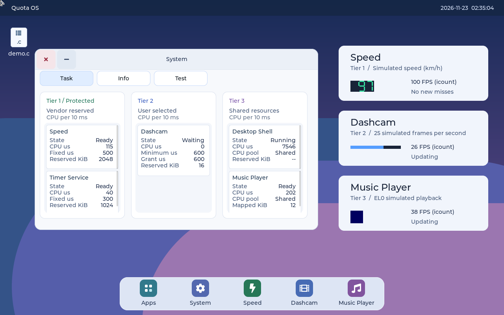
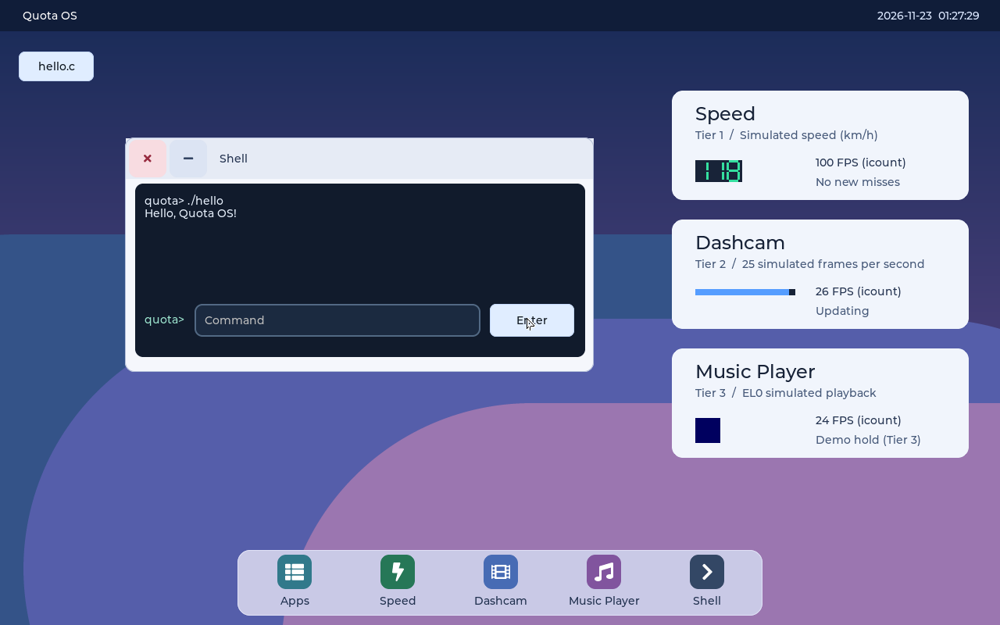

TIER 1
Vendor reserved
The speedometer and timer service use fixed CPU slots.
ARM64 / RESOURCE-PARTITIONED OS
Quota OS is an experimental ARM64 operating system. It reserves CPU time for critical tasks, admits applications against available capacity, and shares spare time among ordinary workloads.



TIER 1
The speedometer and timer service use fixed CPU slots.
TIER 2
The dashcam starts with user approval and sufficient capacity for its declared minimum.
TIER 3
Music and desktop interaction share remaining CPU time under a common cap.
This QEMU TCG icount test measured guest framebuffer commits. GPU queue timing, host presentation, and physical display latency await verification.
Install QEMU with ARM64 system emulation, then run these commands.
git clone https://github.com/leiquan/Quota-OS.git
cd Quota-OS
bash tools/run-files.shOn macOS with Homebrew LLVM and LLD installed, run these commands from the repository root. QEMU ARM64 runs the resulting kernel with one Cortex-A35 core and 64 MiB of RAM.
bash tools/build-lvgl-macos.sh
qemu-system-aarch64 -machine virt,gic-version=2 -cpu cortex-a35 -m 64M \
-nic none -device ramfb -device virtio-tablet-device -device virtio-keyboard-device \
-icount shift=4,sleep=off -kernel build/quotaos-lvgl.bin -append apps-videoEnter this example in Notes and choose Save hello.c. Open Apps → Shell and submit each command with Enter.
int main(void) {
puts("Hello, Quota OS!");
return 0;
}cc hello.c -o hello
./helloThe initial C subset accepts a header-free int main(void), one puts string literal, and return 0. The executable runs in Tier 3. Tier 2 launch parameters are pending.


